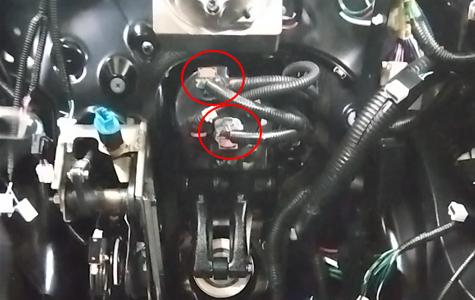
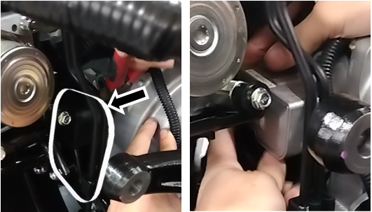
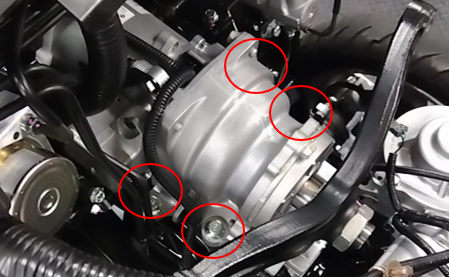
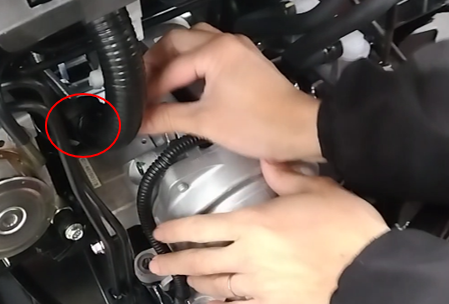

8-1 リーンアクチュエーター
構成図
|
1 |
ACTUATOR ASSY, SUSPENSION CONTROL, FR (C3110-B1000) |
2 |
ROD ASSY, SUSPENSION CONTROL (D8420-B1000) |
|
3 |
NUT, CASTLE Ｗ/FRNAGE |
4 |
PIN, COTTER |
|
5 |
BOLT, FLANGE (Z2210-03000) |
6 |
SUPPORT ASSY, FRONT (E3210-A1000) |
|
7 |
COVER, DASH PANEL HOLE (E5211-A1000) |
- |
- |
取り外し前作業
-
フロントサポート取り外し4-5-1 フロントサポート
-
ステアリングホイール取り外し9-1 ステアリングホイール
-
ダッシュパネルホールカバー取り外し4-2-5 ダッシュホールカバー
取り外し手順

1.ROD ASSY, SUSPENSION CONTROL
-
コッターピンを取り外す。
-
ナット２個を取り外し、ROD ASSY, SUSPENSION CONTROLを取り外す。

-
コッターピンを取り外す。
-
ナット２個を取り外し、ROD ASSY, SUSPENSION CONTROLを取り外す。

2.ACTUATOR ASSY, SUSPENSION CONTROL, FR取り外し
-
室内側からACTUATOR ASSY, SUSPENSION CONTROL, FR接続コネクターを切り離す。

-
リーンアクチュエーター結束バンドを切断する。
-
カバーを取り外す。

-
ボルト４本を取り外す。

-
ワイヤーハーネスクランプを切り離す。

-
ACTUATOR ASSY, SUSPENSION CONTROL, FRを取り外す。
取り付け手順
1.ACTUATOR ASSY, SUSPENSION CONTROL, FR取り付け
-
ACTUATOR ASSY, SUSPENSION CONTROL, FRを取り付ける。
-
ボルト４本を取り付ける。
-
ワイヤーハーネスクランプを接続する。
-
カバーを取り付ける。
-
結束バンドを取り付ける。
-
室内側からACTUATOR ASSY, SUSPENSION CONTROL, FR接続コネクターを接続する。
2.ROD ASSY, SUSPENSION CONTROL取り付け
-
ROD ASSY, SUSPENSION CONTROLを取り付ける。
-
ナット２個を取り付ける。
-
新品のコッターピンを取り付ける。
-
ROD ASSY, SUSPENSION CONTROLを取り付ける。
-
ナット２個を取り付ける。
-
新品のコッターピンを取り付ける。
3.ダッシュパネルホールカバー取り付け
4.ステアリングホイール取り付け
5.フロントサポート取り付け